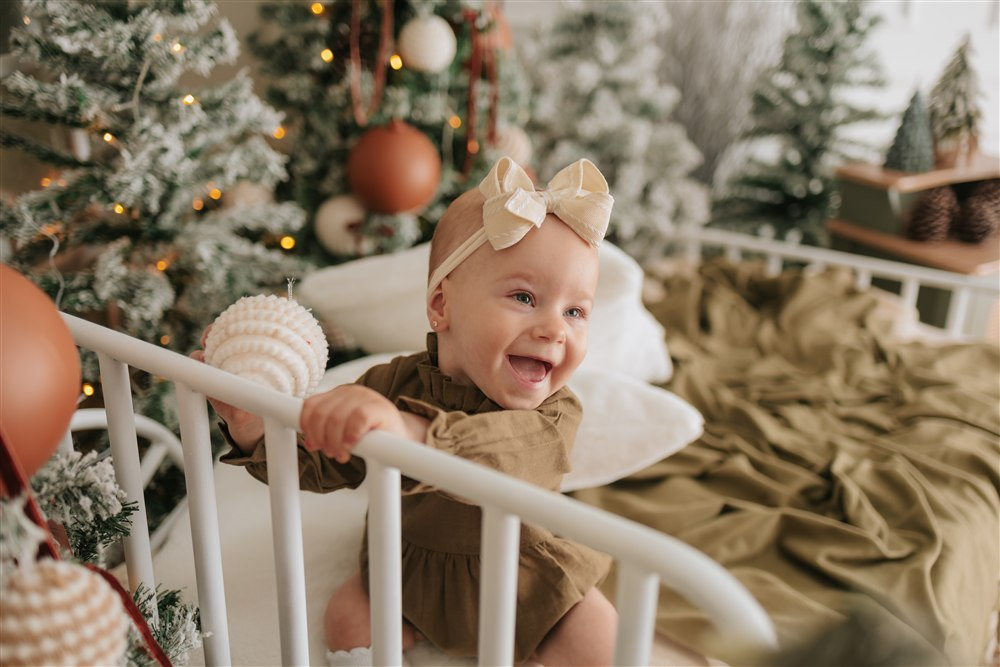
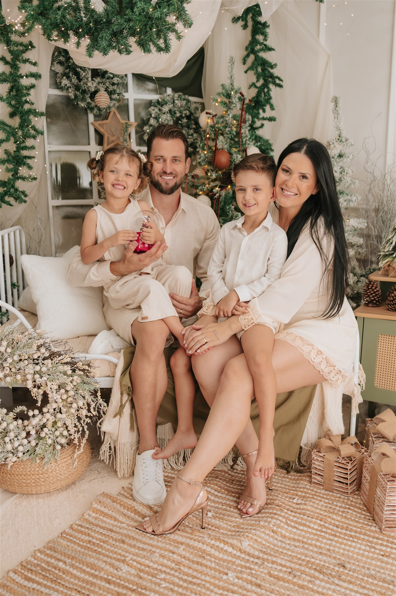

EXPERIÊNCIA 01
Laços
Para celebrar quem está junto.
LOTE 1 · VALOR ATUALR$ 550
30 MINUTOS1 LOOK
- 15 fotos digitais
- Núcleo familiar
- 30 minutos de ensaio
- 1 look
NATAL 2026 · UM ESPECIAL AMANDA CONCER
Carrossel de Memórias
Mas existem momentos que podem continuar
girando dentro da gente para sempre.
Um encontro com a magia de estar junto.
O NOSSO ESPECIAL DE NATAL
O abraço que é casa. O sorriso que aparece sem avisar. O jeitinho de ser criança que, a cada Natal, se transforma.
O Carrossel de Memórias é um convite para desacelerar, estar perto e transformar esse pedacinho da sua história em algo que você pode revisitar para sempre.
Com afeto, Amanda.
UM NATAL PARA SENTIR
No sorriso que surge sem avisar. No brilho de descobrir o Natal. Na alegria de guardar cada primeira vez.
UMA HISTÓRIA DE OUTRO NATAL · FOTOGRAFIAS POR AMANDA

A SUA HISTÓRIA, DO SEU JEITO
Entre abraços, risadas e aquele brilho no olhar, nasce uma história que merece ser vista de novo, ano após ano.
CONHEÇA AS EXPERIÊNCIAS HISTÓRIAS DE OUTROS NATAIS · FOTOGRAFIAS POR AMANDA CONCERESCOLHA COMO GUARDAR ESSE NATAL
Cada família tem seu jeito de viver a magia. Encontre o seu.
Para celebrar quem está junto.
LOTE 1 · VALOR ATUALR$ 550
Para viver o encanto desse Natal.
LOTE 1 · VALOR ATUALR$ 750
Para guardar esse Natal para sempre.
LOTE 1 · VALOR ATUALR$ 1.690
Ainda não sabe qual escolher? Vamos encontrar a sua experiência
VALORES PROGRESSIVOS
Os valores mudam conforme os lotes avançam. O Lote 1 está disponível agora para escolher a experiência que combina com a sua família.
ESCOLHER PLANO E DATA| LOTE | LAÇOS | CARROSSEL | MEMÓRIA |
|---|---|---|---|
| Lote 1DISPONÍVEL AGORA | R$ 550 | R$ 750 | R$ 1.690 |
| Lote 2 | R$ 590 | R$ 790 | R$ 1.890 |
Os valores seguem o lote disponível no momento do agendamento.
SEU NATAL COMEÇA AQUI
Selecione sua experiência para ver os horários disponíveis na agenda da Amanda. A reserva é concluída no Google Agenda, aqui mesmo no site.
Selecione uma experiência para ver os horários disponíveis.
Escolha uma data livre e conclua a reserva no formulário do Google.
O Google reserva um bloco de 60 minutos para organizar a agenda. A duração do ensaio segue o plano escolhido. O horário entra na agenda após concluir o formulário; a confirmação do ensaio depende do sinal de R$150.
Depois de reservar: avise à Amanda qual plano você escolheu. O formulário atual do Google ainda não inclui esse campo.
AVISAR O PLANO PELO WHATSAPPO QUE FICA DEPOIS DO NATAL
Histórias de outros Natais.
O mesmo amor em cada detalhe.
Fotografias por Amanda Concer Histórias reais, memórias que ficam.
ANTES DE VIVER ESSA MAGIA
As respostas para planejar seu ensaio de Natal com tranquilidade.
CARROSSEL DE MEMÓRIAS · NATAL 2026Os ensaios do nosso especial de Natal acontecerão de 25 de outubro a 15 de dezembro de 2026, mediante disponibilidade de agenda.
Escolha o pacote e uma data disponível na agenda acima. Conclua a reserva no formulário do Google e avise à Amanda qual pacote escolheu. Para confirmar o ensaio, é necessário efetuar o pagamento de R$150 de sinal; esse valor faz parte do total do pacote contratado.
O ensaio Laços dura 30 minutos e o Carrossel, 45 minutos. Para o pacote Memória, confirme a duração com a Amanda. A agenda do Google reserva blocos de 60 minutos para organização.
Após a confirmação do agendamento, enviaremos um manual de looks, com orientações sobre a paleta de cores e combinações para toda a família. Também temos um acervo infantil disponível sem custo adicional para crianças de até 3 anos.
Sim! Todos os pacotes incluem fotos nos dois cenários do nosso especial de Natal.
Cada pacote contempla um único núcleo familiar: mãe, pai e filhos, com até 5 pessoas.
Sim! A participação de adultos extras tem o valor adicional de R$50 por pessoa.
O pacote contempla apenas as crianças do núcleo familiar contratado. Para incluir uma criança de outro núcleo familiar, como um primo, é necessário contratar um novo pacote.
Para remarcações, pedimos que nos avise com pelo menos 48 horas de antecedência, para que possamos disponibilizar o horário a outra família. A nova data estará sujeita à disponibilidade da agenda.
Em caso de cancelamento, o sinal poderá ser utilizado como crédito na contratação de outro pacote. Não realizamos a devolução do sinal, ressalvadas as hipóteses previstas em lei.
Temos uma tolerância de 10 minutos. Após esse período, os minutos de atraso poderão ser descontados do tempo da sessão. Programe-se para chegar no horário e aproveitar cada momento!
As fotos recebem correção de luz e cor, seguindo a identidade visual da Amanda Concer Fotografia, com o cuidado e a naturalidade que fazem parte do nosso trabalho.
Em até 3 dias úteis após o ensaio, você receberá um painel para selecionar suas fotos. Depois de concluir e enviar sua seleção, as fotos digitais prontas serão entregues em até 5 dias úteis.
Sim! Você poderá selecionar fotos extras no próprio painel de seleção, pelo valor de R$20 cada.
Para os pacotes que incluem fotos reveladas, você pode optar pela retirada no estúdio, com agendamento prévio, ou pela entrega por motoboy, mediante taxa de entrega.
NATAL 2026 · CARROSSEL DE MEMÓRIAS
Mas esse Natal pode ser.
VAMOS GUARDAR ESSA MEMÓRIA